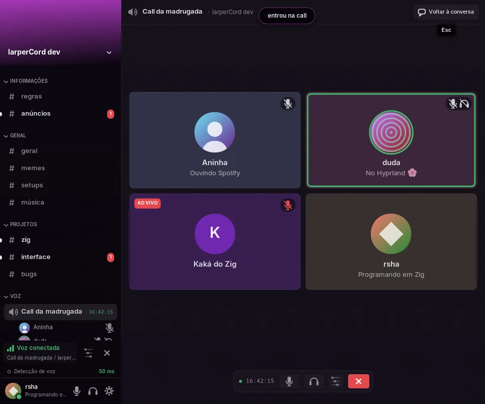
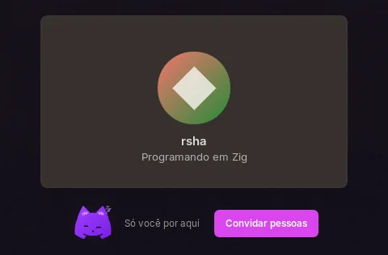
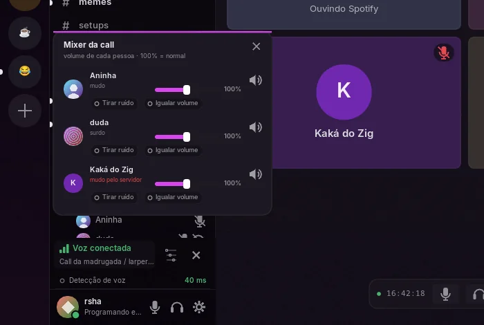

Chamadas de voz
O larperCord entra em canais de voz de verdade do Discord e em calls de DM e grupo, com criptografia de ponta a ponta. Tudo que é de voz roda numa thread própria, criada só quando você entra numa call. Fora de uma call, o módulo não usa CPU e o app não inicializa o áudio, a não ser que você abra Configurações → Voz, que lê o microfone para o medidor enquanto estiver aberta.
Usando
Clique num canal de voz para entrar. O painel acima do seu usuário mostra a call, com mudo, ensurdecer e desconectar. Você também pode sair por "Sair da call", clicando com o botão direito no canal de voz. Quem está falando ganha um anel em volta do avatar. Se alguém mover você para outro canal de voz, o larperCord vai junto.
Os canais de voz com call mostram há quanto tempo ela está rolando, como no Discord (16:42:14). Configurações → Aparência → Canais de voz escolhe o formato ou desliga, e dá para escrever o seu com {H}, {mm}, {ss} e os outros campos. O app só acorda para isso enquanto um tempo está na tela, e só quando o texto muda: uma vez por segundo com segundos, no máximo uma vez por minuto sem.
Numa DM ou grupo, o botão de telefone no cabeçalho começa uma call; os temas de terminal mostram [ligar]. O cabeçalho mostra quem está na call e quem ainda está sendo chamado. Uma chamada chegando mostra um cartão com Atender e Recusar e toca até você responder, com uma notificação do sistema e a barra de tarefas piscando, mesmo com o app na bandeja. No Não perturbe, ou numa conversa silenciada, o cartão vem sem o toque. O toque para quando você atende em outro aparelho ou quem ligou desiste.
Botão direito no microfone ou no fone, ou na setinha que aparece ao passar o mouse, troca o dispositivo e o volume, mesmo no meio da call; numa call, o botão direito na faixa de voz mostra os dois. Ctrl+Shift+M muta e Ctrl+Shift+D ensurdece, e as duas teclas dá para trocar em Configurações → Atalhos de teclado.
A tela da call
Clicar num canal de voz abre a call no lugar da conversa: um quadro por pessoa, com a foto e o nome dela (num servidor, os que ela escolheu para ele), o anel verde enquanto fala, o microfone e o som quando estão desligados, o que está jogando e o selo AO VIVO de quem transmite. Clique num quadro para o menu da pessoa. O seu microfone, som, mixer e sair ficam numa barra com o tempo da call, no lugar da caixa de mensagem. Passe o mouse no seu quadro para ver o nível do seu microfone com a marca do limiar da detecção de voz; só então esse medidor gasta algo.

Esc, Voltar à conversa, trocar de aba ou abrir um canal de texto voltam para a conversa, e clicar no status da call na faixa de voz abre a tela da call de novo. Calls em DM e grupo ganham a mesma grade em cima da conversa. Nos temas de terminal, ela aparece em texto.
Sozinho na call, o seu quadro fica menor, e embaixo dele o mascote cochila ao lado de "Só você por aqui" e do botão Convidar pessoas.

Os quadros seguem o tema: as cores, os cantos e o estilo de cartão dele (vidro no vidro, papel no papel, recorte de jornal no editorial…), com um toque da cor da foto de cada pessoa, e o texto troca de cor quando ficaria difícil de ler. Quem faz tema escolhe isso com call-style e call-tint no componente messages; veja A tela da call no guia de temas. Não tem câmera nem compartilhamento de tela.
Volume por pessoa
O mixer dá a cada pessoa o próprio volume, e mais dois botões desligados de começo que só mexem naquela pessoa:
- Tirar ruído usa no som dela o mesmo supressor de ruído do seu microfone (RNNoise). Gasta um pouco de CPU enquanto ela fala, por isso é por pessoa, e só existe enquanto o botão está ligado.
- Igualar volume sobe quem fala baixo e desce quem fala alto, para perto do volume dos outros, sem subir o chiado das pausas. Fica entre um quarto e quatro vezes o volume original.
As escolhas ficam guardadas e valem em toda call.

Botão direito em alguém da sua call, onde a pessoa aparecer (o canal de voz, a lista de membros, uma mensagem, uma call de DM), mostra Volume do usuário, de 0 a 200% (100% é o normal), e Silenciar para mim. É a mesma configuração do mixer, então os dois andam juntos. Silenciar guarda o volume, então tirar o silêncio volta ao mesmo nível.
A faixa de voz
A faixa de voz mostra o ping, a qualidade da conexão por cor e quando você está transmitindo, e avisa se o microfone não abrir ou se o servidor te mutou ou ensurdeceu. Mudo e surdo dos outros aparecem na lista da call.
Os canais em que você não tem permissão para conectar aparecem com cadeado, e o app nem tenta.
Configurações → Voz
- Microfone e saída: lembrados pelo nome, voltam ao padrão se sumirem, e dá para trocar no meio de uma call.
- Volumes, nível do microfone ao vivo e Testar microfone, que toca de volta o que você fala, com os filtros. Use fones.
- Detecção de voz: limiar ajustável sobre o medidor, ou Sensibilidade automática, que aprende o ruído de fundo.
- Aperte para falar: uma tecla ou um botão do mouse. O envio segue por um instante depois de soltar, para não cortar a última palavra. No Linux, só funciona com a janela em foco. No Windows, funciona também com outra janela em foco, como um jogo, e o outro programa continua recebendo a tecla: o app lê sem gancho de teclado. Vale para a maioria das teclas (letras,
F13aF24, os botões laterais do mouse…), e a página avisa quando a escolhida só funciona com a janela em foco. - Filtros: um passa-altas que tira o ronco abaixo de 90 Hz e uma porta de ruído. Cada um pode ser desligado.
- Supressão de ruído: Desligada ou RNNoise, ligada por padrão e trocável em plena call. Roda no seu computador, atrasa o microfone em 20 ms e custa de 2% a 3,5% de um núcleo num Core i5 de 2011 com o microfone aberto, e menos em processadores mais novos. Desligada, no mudo ou com a tecla do aperte para falar solta, não custa nada.
- Sons: uma linha por evento (você entra ou sai, alguém entra ou sai da sua call, mudo, desmudo, ensurdecer, desensurdecer e o toque). Cada um pode ser Desligado, Clássico, Suave, Cristal, Retrô ou um arquivo seu em WAV ou Ogg Opus (até 2 MB e 5 s, 15 s para o toque), com prévia e volume. Sons da call continua ligando ou desligando todos os curtos.

Como funciona
| Camada | O que usa |
|---|---|
| Sinalização | Gateway de voz v8 por WebSocket, com heartbeat (seq_ack) e RESUME quando a conexão cai |
| Conexão | IP discovery (pacote de 74 bytes) e Select Protocol por UDP |
| Criptografia de transporte | RTP com aead_xchacha20_poly1305_rtpsize |
| Criptografia de ponta a ponta | DAVE sobre MLS, pela libdave e pelo MLSpp |
| Codec | Opus a 48 kHz estéreo, 20 ms por pacote. Pacotes perdidos viram o packet-loss concealment do Opus |
| Áudio | O SDL3 mistura. Cada pessoa é um SDL_AudioStream no mesmo dispositivo de saída, e o volume dela é o ganho do stream. O microfone é um stream lido a cada 20 ms |
| Por pessoa, quando ligado | Tirar ruído passa o som dela pelo RNNoise de 20 em 20 ms; desligar volta ao som cru em alguns quadros, sem emenda. Igualar volume mede só a fala (silêncio e chiado não contam), desce rápido e sobe devagar, vai de rampa dentro de cada quadro e tem um limitador no pico |
Alguns detalhes que deram trabalho para acertar:
- O opcode de "falando" (op 5) sai uma vez quando a sessão abre, e de novo ao retomar. Ele não liga e desliga a cada frase, porque assim o servidor descartava o começo de cada uma.
- O relógio do RTP continua andando com o tempo real enquanto você está calado, para quem recebe não descartar os seus pacotes depois de uma pausa.
- A folga contra o jitter só entra no começo de cada fala e dentro das pausas de quem fala. Aplicá-la sempre que a fila esvaziava causava buracos audíveis.
- O relógio RTP separa a pausa de quem fala de um pacote atrasado: o número de sequência só anda com pacote, o relógio anda sempre. A porta de ruído fechando não é rede ruim.
- Quando uma fila vai secar, a ocultação do Opus preenche e vai a zero, então uma parada nunca corta no meio da onda. Áudio que não continua de onde parou começa do último valor tocado.
zig build voz-redepassa Opus de verdade por redes ruins simuladas e compara a lógica de reprodução, contando buracos e estalos.LARPER_VOZ_FALAescolhe um arquivo de fala eLARPER_VOZ_WAVgrava a saída para ouvir.- Quem já está numa call pode chegar antes de o DAVE existir, então essas pessoas são guardadas e adicionadas quando ele começa.
Limites hoje
- No Linux, o aperte para falar só funciona com a janela em foco, porque o SDL não tem atalho global portável. No Windows, funciona de qualquer janela.
- A supressão de ruído cuida de ruído constante. Teclado e pancadas podem passar, e outras vozes continuam.
- Sem compartilhamento de tela, câmera nem transmissão.
- Sem teste automático para uma call de verdade. O QA cobre a interface e as configurações, com um dispositivo de áudio falso.
Depuração
No Linux, abra por um terminal (encerre antes se ele estiver na bandeja) com:
LARPER_VOICE_DEBUG=1 larpercordNo Windows, ou sem terminal, ligue Configurações → Avançado → Salvar registro de depuração antes de entrar na call, e depois use Abrir a pasta do registro. O arquivo é %LOCALAPPDATA%\larpercord\debug.log no Windows e ~/.cache/larpercord/debug.log no Linux.
Dos dois jeitos você recebe opcodes, códigos de fechamento e eventos do DAVE, além do nível do microfone e dos quadros enviados. Nunca tem o token nem chaves.
Para testar só a conexão, o --voice-test entra num canal por 25 segundos, sempre mudo:
LARPER_TOKEN=... larpercord --voice-test GUILD_ID CHANNEL_IDNo Windows ele só pega o token do LARPER_TOKEN, e o texto dele precisa ir para um arquivo, porque não há console:
$env:LARPER_TOKEN = [Net.NetworkCredential]::new('', (Read-Host 'Token' -AsSecureString)).Password
Start-Process "$env:LOCALAPPDATA\Programs\larperCord\larpercord.exe" -ArgumentList '--voice-test','GUILD_ID','CHANNEL_ID' -NoNewWindow -Wait -RedirectStandardError voz.txt; Get-Content voz.txt
Remove-Item Env:LARPER_TOKENO protocolo segue a documentação de voz do Discord e a documentação do protocolo DAVE.